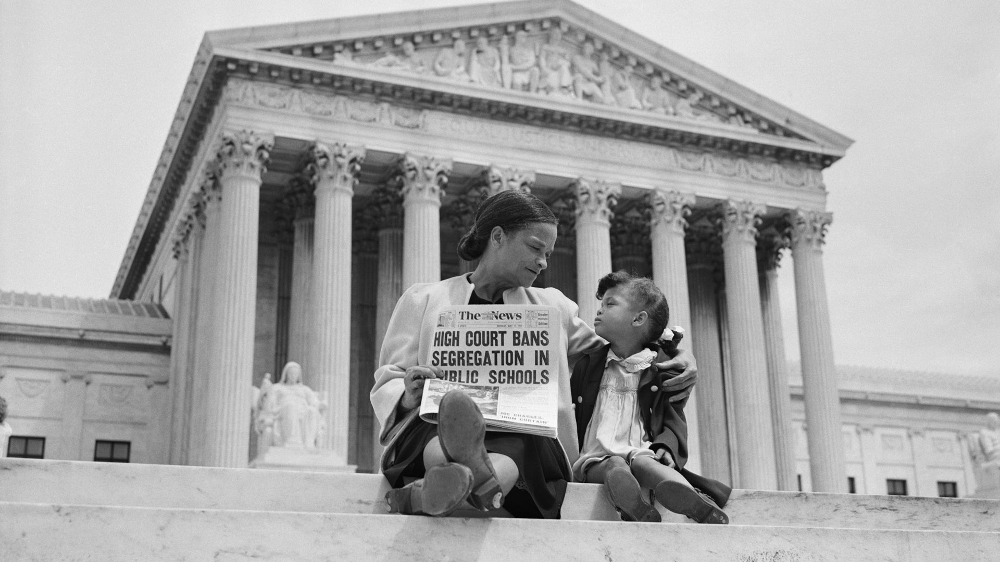

1954: Brown v. Board of Education (#1)
This landmark Supreme Court case in 1954 declared racial segregation in public schools unconstitutional, laying the foundation for the civil rights movement. It played a pivotal role in challenging racial inequality and promoting equal educational opportunities for all.